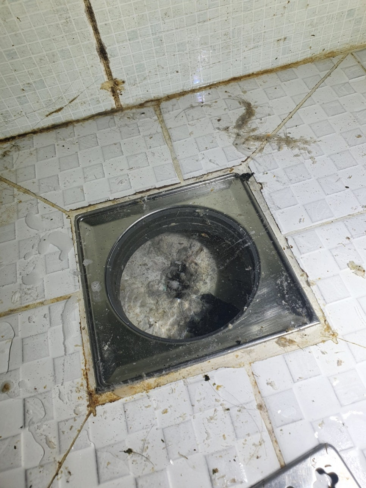
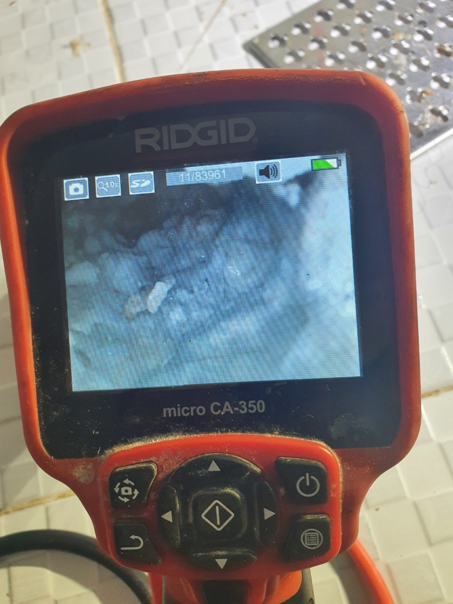
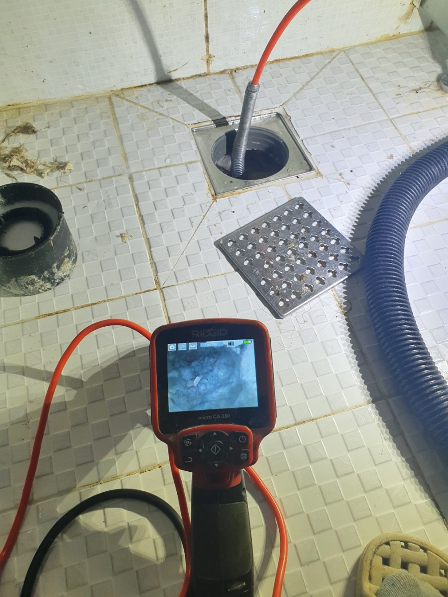
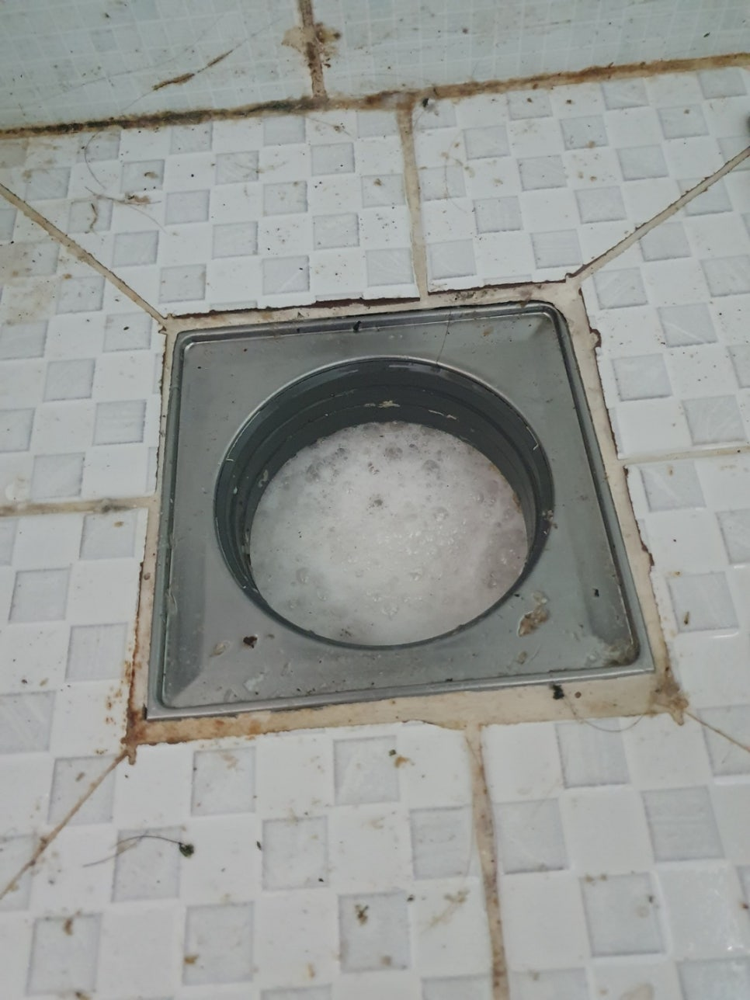
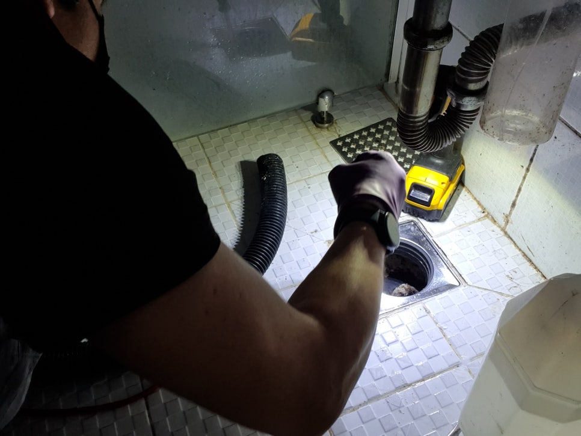
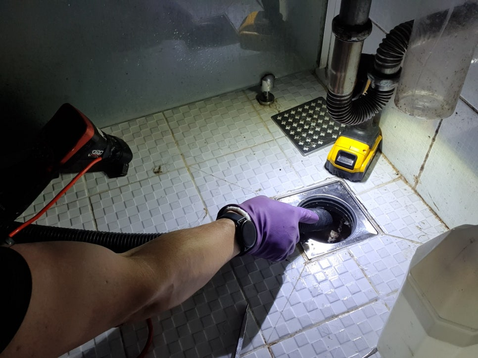
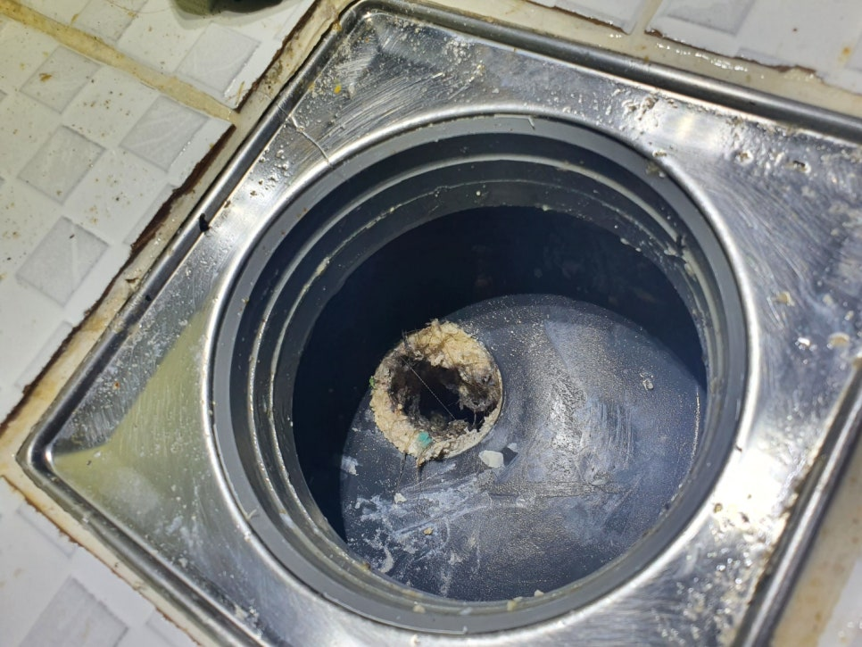

🏠 권선구하수구막힘 권선동욕실하수구막힘 세류동 호매실동 영통동 욕실하수구뚫는곳
수원 하수구막힘 전문 시공 후기

📋 작업 개요
- 위치: 수원
- 서비스 유형: 하수구막힘, 배관막힘, 뚫는업체
- 작업 일시: 2021. 5. 31. 23:20
- 업체명: 하수구수사대 (010-5615-2118)
🔍 문제 상황
안녕하세요
수원하수구막힘 전문업체 "하수구수사대" 입니다
2021년도 어느덧 5월의 마지막이네요.
코로나전염병이 시작한지도 1년이 훌쩍
넘었는데 하루빨리 일상생활로 돌아가길
간절히 기도해봅니다.
오늘은 권선동 한 아파트에서
욕실하수구가막혔다는 고객님의 연락을 받고
"하수구수사대"가 출동하였습니다.
자 그럼 권선구하수구막힘의 작업현장의
이야기를 써보겠습니다.
밖에서만 봐도 석회가 심각하게 많은
상황이였고 물이 하나도 빠지지 않고 있었습니다.
우선 석회가 왜 생기는지 궁금할수 있는데요
이유는 사람몸에서도 기름이 나오고
비누나바디워시,샴푸등 거품을 제대로
씻어 내려주지 않으면 배관에 거품이
굳어서 생기는 현상입니다.
내시경검수
권선구하수구막힘 배관내부상태를 보기위해
내시경으로 검사를 진행합니다.
보이시나요?
심각할정도로 막혀있습니다ㅜㅜ
딱딱한 석회성분을 깨부셔주는 작업이
필요한데 조심해야 할부분이 있습니다.
작업시 보통 보이는곳은 대드라이버로
부셔주는데 딱딱하다고 너무 힘을주면
배관에 금이가거나 깨질수 있어서
힘조절이 중요합니다.
석회가 단단하기에 우선 석회전용특수약품으로

🔎 원인 분석
💡 전문가 진단: 권선구하수구막힘 권선동욕실하수구막힘 세류동 호매실동 영통동욕실하수구뚫는곳
석회를 연하게 만들어주는
역할을 해줍니다.
어느정도 5~10분정도 지나면
석회가 쉽게 부서질 정도가 되기에
굉장히 유용합니다.
석회제거
권선구하수구막힘 욕실보이는 곳부터
공략을 해줍니다.
드라이버로 부시고 빨아내는 석션작업을
반복해 줍니다.
특히 이 작업을 할때 무리가 가지않게
해줘야합니다.
석회를 부셔서 내보내게되면
막히기 때문에 무조건 빨아내는것이
정답입니다.
우선 위쪽은 깨끗하게 되었네요^^
이제 배관안쪽을 할 차례입니다.
보이는곳은 드라이버로 깰수도
있고 장비를 돌려도 됩니다.
욕실하수구막힘은 보통 석회나 머리카락이
대부분입니다.
배관이 깨끗하면 머리카락이
빠져도 물을타고 잘 흘러나가지만
석회가 끼기 시작하면 머리카락이
석회에 걸려 못나가게 되고 점점
머리카락이 뭉치게 되면서 막히는
원인이 됩니다.
욕실하수구막힘증상이 있다면
한번쯤 의심해볼만합니다.
권선구하수구막힘 욕실배관에 넣을

🔧 작업 과정
플랙스샤프트102입니다.
우선 배관크기에 맞게 앞쪽의
체인간격을 조절해 줍니다.
체인간격이 넓으면 배관에 무리를
줄수있기때문에 조심하고 또 조심합니다.
배관에 넣고 장비를 돌려줍니다.
약품으로 석회를 연하게 만들어 주었기
때문에 가능합니다.
우선 앞쪽부분을 먼저 공략하고
석션작업을 병행해줍니다.
사진처럼 석회가 쌓이지 않게 하게위해서
바디워시,비누거품들을
몸에서 닦아내고 배관에 남아있지않게
물을 충분히 내보내 줘야합니다.^^
장비를 꺼내보니 앞부분에
머리카락과 석회가 엉겨서 나오네요.
작업중간에 셕션통을 열어보니
석회와 머리카락이 엄청나와있네요.
권선구하수구막힘 욕실하수구 깊은곳을
작업해주고 있습니다.
깊은곳이 보이지 않기때무에 내시경과 장비를
동시에 넣고 석회를 제거해줍니다.
권선구하수구막힘 권선동욕실하수구막힘 세류동 호매실동 영통동
욕실하수구뚫는곳
배관 깊은곳까지 깨끗하게
석회제거가 완료되었습니다.
작업하고 깨끗해진 배관을 보면
보람도 있고 속이 후련해집니다^^
물이 잘 나가는지 배수테스트를
해봅니다.
영상을 보시면 물이 옆에서 나오는게
보이는데 세면대물을
틀어놓은 상태입니다.
아파트마다 구조가 틀려서
어떤아파트는 세면대배관이 밑에서 배관
에 연결해 놓은 곳도있고
정해진건 없습니다.
가끔 어떤현장을 가면 세면대 물이
잘 안내려간다고 하시는데
마찬가지로 물이나오는 원통벽면에
석회가 가로막고 있는
경우도 있으니 유심히 볼 필요가
있습니다.
권선구하수구막힘 욕실하수구에서 나온
석회의 양이 어마어마합니다.
앞으로 10년?20년?이상은
쓰시겠네요^^
마지막으로 배수가


✅ 작업 완료
잘되는지 테스트를 해봅니다^^
고객님께서도 속이 시원하다고
오늘은 물 실컷틀어놓고 샤워를
해야겠다고 하시네요
이웃 여러분도 비누거품,바디워시거품등
배관에 남아있지않게 관리하시길
추천해드립니다^^
권선구하수구막힘 욕실하수구막힘 완벽해결!!
이상 "하수구수사대"
였습니다.
하수구수사대
010-2340-2118




⚠️ 하수구 배관 막힘 예방 및 관리 가이드
- ✅ 머리카락, 비닐, 물티슈 등 물에 분해되지 않는 이물질은 하수구 유입을 절대 금지해 주세요.
- ✅ 하수구 거름망을 씌우고 모여진 이물질은 주기적으로 쓰레기통에 바로 비워주셔야 합니다.
- ✅ 배관 노후가 심할 경우 이물질이 더 쉽게 걸리므로 주기적인 배관 세척(고압세척 등)을 권장합니다.
- ✅ 작업 후 1년 이내 재발 시 하수구수사대에서 무상 A/S 보증 서비스를 제공합니다.
💡 핵심 정리
- 확실한 장비 작업(내시경 점검 및 샤프트 스케일링)으로 원인을 뿌리 뽑습니다.
- 작업 후 1년 이내에 동일한 부위 재발 시 100% 무상 A/S 서비스를 보장합니다.
- 서울 · 경기 · 인천 전 지역에 24시간 언제든 긴급 출동할 수 있도록 항시 대기 중입니다.
❓ 자주 묻는 질문 (FAQ)
🚨 수원 하수구막힘 문제로 고민이신가요?
정확한 원인 진단과 확실한 시공으로 재발 없는 해결을 약속드립니다.
24시간 긴급 출동 | 서울 · 경기 · 인천 전지역 | 1년 내 재발 시 무상 A/S